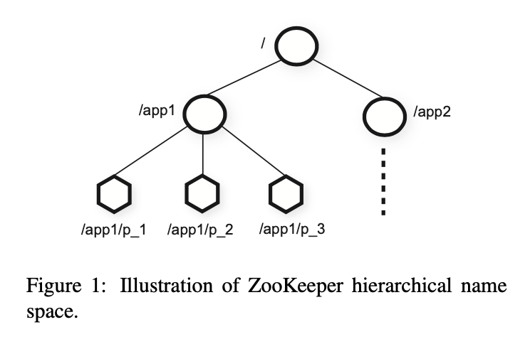
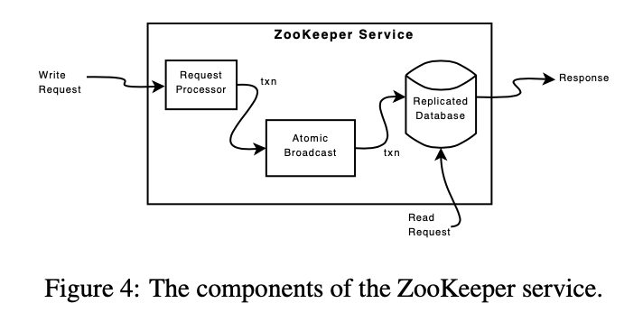

Paper: https://www.usenix.org/legacy/events/atc10/tech/full_papers/Hunt.pdf
Presentation: https://www.usenix.org/conference/usenix-atc-10/zookeeper-wait-free-coordination-internet-scale-systems
Data Model

Zookeeper’s data model is very like that of Unix tree-like file system paths. Every node is called a znode, with a key name and value, and may have its own children (except for ephermeral nodes).
Each znodes contain metadata like timestamps and data version number.
Nodes may be regular nodes, or ephermeral nodes, where clients keep alive by sending heartbeats to the server, and are removed in server after timeout. Handy for keeping membership information.
Provides basic client API like create, get, set, delete, getChildren,
and sync, for clients to read the most up to date information.
Guarantees
Keeps two consistency guarantees:
- Linearizable writes: All writes are linearizable, and specifically
Asynchronous linearizabile, meaning client requests are non-blocking (or wait-free), but requests are processed in serialized fashion. - FIFO client order: All requests from clients are in processed in requested order. Meaning the client will see results in order when it’s issued. This provides consistency guarantees in many applications.
Zookeeper writes are processed at leader level, while reads are processed at all nodes,
for better scalability and performance, and therefore doesn’t provide strong
consistency. Zookeeper provides a sync() API for clients to read up to date data.
Primitives and Applications
With Zookeeper’s consistency model in mind, we can create powerful primitives based on Zookeeper’s, for cluster key configuration management.
- Configuration Management: Zookeeper’s A-Linearizibility consistency makes it ideal
for managing consensus data across cluster. It also provides
watchprimitives for clients to watch value changes. - Rendezvous: Saves information when cluster is bootstrapping, and master of another application is undecided. Clients can read from a designated znode for cluster configuration. It works as a service discovery mechanism.
- Group Membership: Using ephemeral znodes, clients can save their liveness information,
by keep sending heartbeats to the znodes. Once client disconnects/network partitions, znode
goes away. Can also use
SEQUENTIALflag to obtain unique name assignment. - Locks: Client can create a ephemeral znode as a lock, all future clients will read if lock is in place befor modifying data. Lock is release when holder unlocks or dies/network partitions. Fancier locks are possible with some modifications.
Implementation

Request Processor
Request processor in Zookeeper is idempotent.
All write requests are processed as transactions, it either generates a new version number for data when request version number matched, or generates an error if failed.
Atomic Broadcast
All servers process reads, and writes are forwarded to the leader. Zookeeper uses
a protocol named Zab to keep consensus among the cluster. Like Paxos, it requires
a quorum to reach consensus.
Replicated Database
Zookeeper replicates data in all followers’ database. It takes snapshots to compact data.
Zookeeper snapshots are called fuzzy snapshot, as it’s not necessarily a valid state of the
Zookeeper data tree. But during recovery data can be recovered with fuzzy snapshot and
operation logs.
Client-Server Communication
Client reads from all servers for performance, and writes are transactions.
To read the latest data, client syncs before read.
Followers process syncs by appending to previous write queues to leader.
If there are no new writes before sync, it generates a dummy sync to guarantee
the leader is still leader.